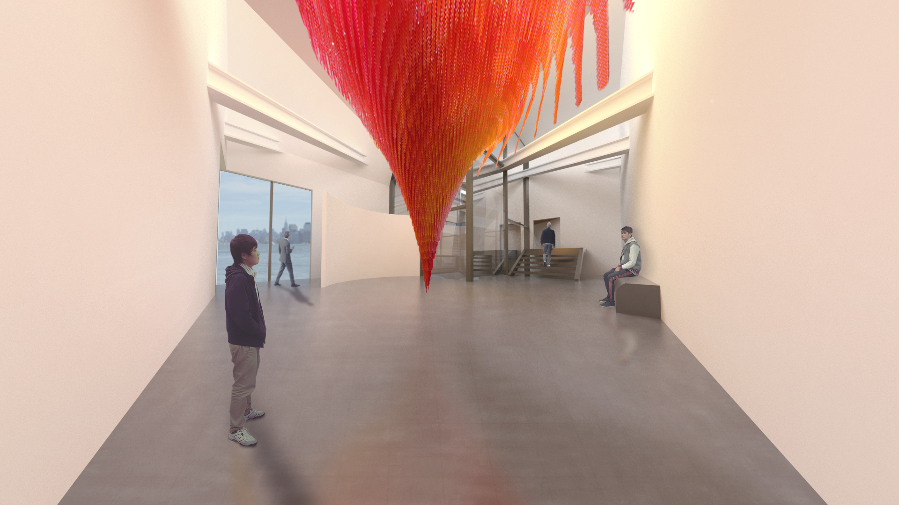
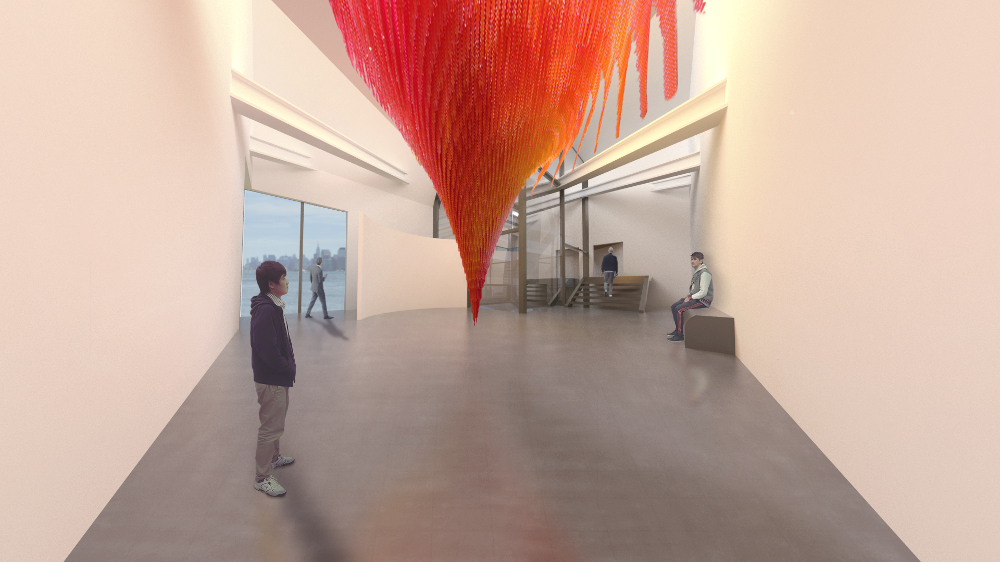

Highline Art Gallery
Project Type
Spatial Design, 3D Modeling, Rendering
Personal Role
Sketching, Quality Control, Project Management
Summary
We designed an art studio and gallery that would hang over the High Line park in New York and where artists could come for some amount of time and showcase their work.
Choosing The Location
When choosing where to create our building, we knew it had to be very well thought out, as the building needed to be grounded in its surroundings. In an earlier project, my team and I took at look New York's architecture, and more specifically, the High Line park itself.
Through our study, we found that this park served as a walk-through art gallery that showcased different pieces of art around New York, from big murals to great buildings by famous architects, and we concluded that designing for people specifically creates a chain reaction and attracts visitors and even more great design extremely effectively.
Designing The Space
Our realizations about the park led us to conclude that an art gallery on the High Line itself would be the perfect idea and would be a great fit to the already beautiful public space. After deciding with certainty on the idea, we again took a close look at the park and began to think about the ideal location of our building.
We noted that on one side, the park's walkway ended in an old rail yard, and the current entrance to that side of the beautiful park didn't do it any justice. With this, we saw the perfect opportunity to locate our building at this location to create a much more pleasant entrance to the High Line, one that would better showcase the importance of this park within it's surroundings.
Making The Model
The biggest challenge when designing the actual building originated due to the nature of the park we wanted to build on. As the High Line is a places where hundreds of people go to walk and run every day, it was very important that we didn't disturb the natural flow of the walkway. This is what inspired us to suspend the building overtop of the ground and split the walkway around it.
The building would be held by the big metal frame that passes through the art gallery and overlaps each side of the walkway creating its 'shell'. Although it might not be the most structurally possible solution, we thought it was the best way to ensure that the flow on and off the High Line was not obstructed at all. The shell also provides shelter underneath to create a great dwelling space at any time of the day.

Final Renders
 
